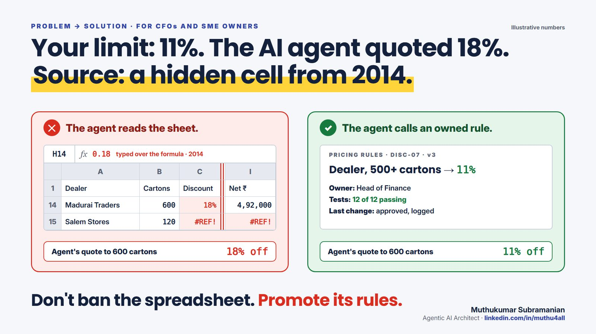

Your AI Agent Learned Pricing from a 2014 Excel Sheet. Nobody Knows the Formula.
By Muthukumar Subramanian · Agentic AI Architect

Saturday evening, a dealer in Madurai sends a WhatsApp message to a Chennai distributor: "Your bot gave me 18% off on 600 cartons. Confirming the order."
The sales head reads it twice. They've never given more than 11% on that range.
On Monday they trace the quote back. The new quoting agent didn't make the number up. It read it from PRICING_FINAL_v7(2).xlsx, a sheet built in 2014 by an accounts manager who left in 2019. Column H is hidden. Inside it sits a typed-in 0.18 that overrides the discount formula for "special dealers". Nobody remembers who was special, or why.
The agent quoted 47 dealers from that sheet in one weekend. (A composite story; every number here is illustrative.)
The riskiest AI system in your company may not be the model. It's the spreadsheet the model trusts.
The problem: the formula left with the person who wrote it
Almost every Indian business I've worked with has one of these. A pricing sheet. A credit-limit sheet. A commission sheet that decides how much the sales team takes home. They run real money, and they hold rules nobody has ever written down anywhere else.
These sheets are fragile in the same few ways:
→ Numbers typed over formulas, so a "rule" is really one person's guess from 2014.
→ Hidden columns and rows that change the answer.
→ VLOOKUPs pointing to a tab someone deleted, now quietly showing #REF!.
→ A GST column added in 2017, because the sheet is older than GST, and patched again when the slabs changed in September 2025.
→ Twelve copies on twelve laptops, each "final".
This isn't a dig at Excel. Spreadsheet researchers like Ray Panko have shown for years that people get roughly 1 to 5 in every 100 formula cells wrong when they build models, experts included. At JPMorgan in 2012, a risk spreadsheet that divided by a sum instead of an average made risk look smaller than it was. It was part of the London Whale story, a loss of more than $6 billion. Smart people, ordinary errors.
For years, a person stood between the sheet and the customer. The sales head would look at 18% and say, "That can't be right."
Then we put an agent in that chair. It doesn't get a gut feeling. It reads the cell and quotes, at machine speed, to every dealer at once.
👉 [IMAGE: B-day10-2-in-article-read-the-sheet.png]
Caption: What an AI finds when it reads the sheet cell by cell. The owner has to confirm or reject every rule.
The solution: read the sheet, then retire it as the source of truth
Here's the twist that I like. The same AI that made this risky is also the best tool we've ever had for fixing it. Modern models are good at reading a messy workbook and explaining it in plain words.
The rescue has five steps:
→ 1. Find. List every sheet an agent reads, or will read. Pricing, discounts, credit limits, commissions.
→ 2. Read. Let AI walk every formula and write each rule in plain English, and flag every hard-coded number, hidden column and broken reference.
→ 3. Confirm. The business owner goes through the list, rule by rule, and marks it right, wrong or "nobody knows". That last pile is your real risk.
→ 4. Move. Put the confirmed rules into a small rules table or service, with an owner, a version number and tests. "Dealer discount above 500 cartons = 11%" becomes a test that fails if anyone changes it.
→ 5. Switch. The agent calls the rules service, never the file. The sheet becomes a report that reads from it.
Note what step 3 is. AI can tell you what the sheet does. Only the business can tell you what it should do.
👉 [IMAGE: B-day10-3-in-article-rescue-steps.png]
Caption: The five-step spreadsheet rescue. Steps 2 and 4 are where AI saves weeks; step 3 stays human.
👉 [GIF: B-day10-4-in-article-trace-the-quote.gif]
Caption: An agent's quote traced back through the cells to a hard-coded 2014 number, then the fixed path through an owned, versioned rule.
Who actually does this work
Not a big-bang IT project. This is where the forward deployed engineer (FDE) earns their title: an engineer who sits with the customer's own team and ships on their real systems. Here that means two weeks beside the finance manager and the senior sales person, with the sheet on one screen and the AI's explanation on the other, asking "why is this 0.18?" until someone remembers. The title is new and still settling; the work is old-fashioned listening.
Then someone has to own the rules once they're live. Call it a pricing owner, an AI Agent Manager or simply the finance head. What matters is a name.
The hard parts
→ The AI can be confidently wrong about intent. It reads 0.18 correctly and invents a neat reason for it. Treat every explanation as a draft until a person signs it.
→ Some rules are deliberately unwritten. A discount for a long-standing dealer, a favour for a family relative. Moving it to a rules table makes it visible. Some people won't like that.
→ The sheet will come back. Finance will copy the export into Excel "just to check" and start editing. Lock it, or make the real system easier.
→ Data leaves the building. Pricing and margins are sensitive. Use a company-approved AI tool, not a free chat window.
→ Small firms will say it's too much. For a ₹20 crore distributor, start with the one sheet the agent touches. Not all forty.
The opportunity
→ For SME owners and CFOs: before any agent goes live, ask one question: "Which spreadsheet will it read?" Then ask who owns it.
→ For CA firms and consultants: "spreadsheet rescue" is a service you can sell next month. Read, confirm, move, with a fixed price per sheet.
→ For IT services firms: send an FDE with every quoting or collections agent, and make the rules extraction part of the deal.
→ For founders: tools that turn a Tally export plus a pricing workbook into a tested, versioned rules service. Every Indian distributor is a customer.
Don't ban the spreadsheet. Promote its rules.
Your turn 👇
Should an AI agent ever read prices straight from a spreadsheet: yes or never?
Tag the person in your company who's the only one who understands "the sheet".